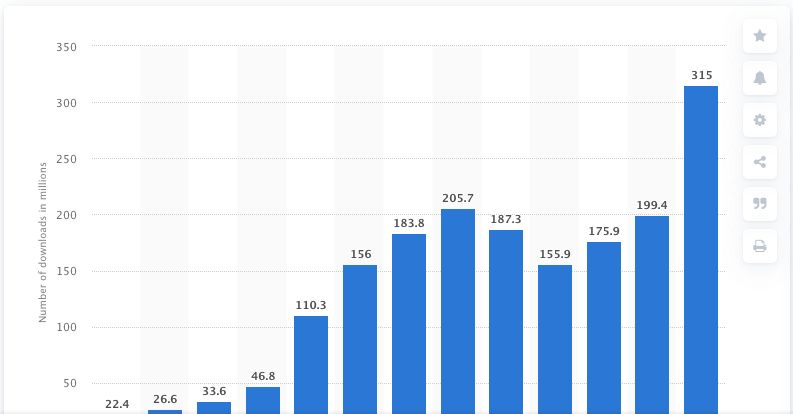

Jumlah Kuota Beasiswa Unggulan 2026, Ini Perkiraannya

Pendaftaran Beasiswa Unggulan 2026 berlangsung pada 20–24 Agustus 2026. Hingga 8 November 2026, portal dan pedoman resmi Kementerian Pendidikan Dasar dan Menengah (Kemendikdasmen) yang ditinjau belum mencantumkan angka kuota nasional. Jumlah penerima pada seleksi sebelumnya dapat digunakan sebagai gambaran awal.
Perkiraan berdasarkan data penerimaan 2025
Kumparan, mengutip data Forum Awardee Beasiswa Unggulan, melaporkan bahwa pada 2025 terdapat sekitar 2.600 penerima dari 32.000 pendaftar. Berdasarkan angka tersebut, rasio penerimaan pada 2025 sekitar 8,1 persen, atau sekitar 8 dari setiap 100 pendaftar. Sebagai pembanding, Pusat Layanan Pembiayaan Pendidikan (Puslapdik) mencatat lebih dari 2.500 mahasiswa memperoleh Beasiswa Unggulan pada 2023. Jika skala penerimaan 2026 mendekati tahun sebelumnya, sekitar 2.600 penerima dapat digunakan sebagai perkiraan awal. Perkiraan ini mengacu pada jumlah orang yang menerima beasiswa pada 2025. Untuk menghitung rasio penerimaan 2026, diperlukan data jumlah pendaftar dan penerima pada seleksi tahun ini.
Di mana informasi resmi bisa dicek?
Penerima Beasiswa Unggulan ditetapkan oleh Kepala Puslapdik setelah seleksi administrasi dan wawancara. Peserta dapat memantau hasil seleksi serta pembaruan informasi melalui portal resmi Beasiswa Unggulan.
3. Tips Mempersiapkan Diri Menghadapi Persaingan Kuota
Periksa persyaratan sesuai jalur dan jenjang. Buat daftar berkas berdasarkan status sebagai mahasiswa baru atau mahasiswa aktif. Dahulukan dokumen yang membutuhkan bantuan pihak lain, seperti surat rekomendasi atau surat keterangan dari kampus. Sisakan waktu untuk memeriksa kembali berkas sebelum dikirim. Pedoman resmi Beasiswa Unggula. Gunakan pengalaman konkret untuk menjelaskan tujuan studi. Dalam esai, pilih satu pengalaman yang relevan dan uraikan peran, tindakan, serta pelajaran yang diperoleh. Misalnya, pengalaman mendampingi kelas belajar di komunitas dapat menjadi dasar untuk menjelaskan kebutuhan mempelajari cara menyusun bahan ajar yang sesuai dengan kemampuan peserta. Latih jawaban wawancara berdasarkan isi esai. Minta teman atau mentor membaca esai dan mengajukan pertanyaan lanjutan, seperti “Mengapa program studi ini sesuai dengan rencana Anda?” atau “Apa langkah pertama untuk menjalankan kontribusi tersebut?” Gunakan latihan ini untuk menemukan bagian yang masih terlalu umum dan memperjelasnya dengan contoh.
Persiapkan dirimu sebaik mungkin bersama layanan belajar dan latihan di Ruang Belajar dan Ruang Uji GenuWin agar peluang lolos seleksimu semakin besar!